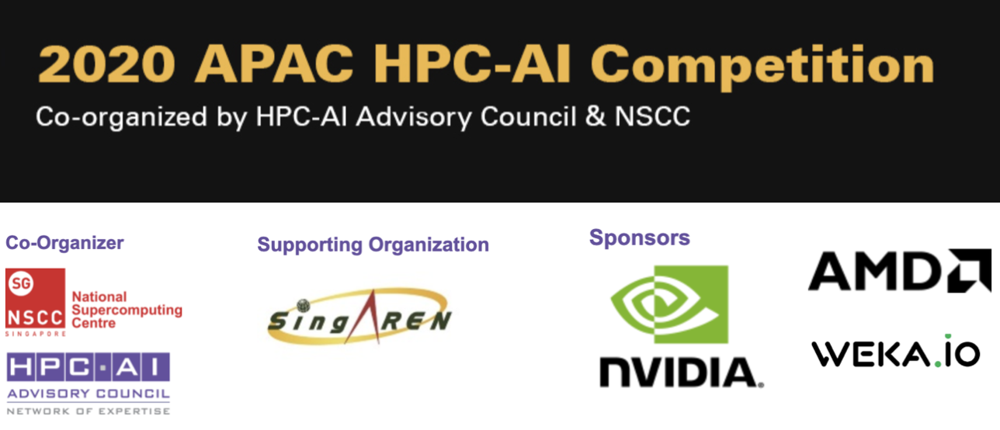

National Tsing Hua University Student Cluster Competition
To practice my skills in developing creative and innovative technologies, I joined the Student Cluster Competition team led by Professor Jerry Chou. In a team of five, I was in charge of making sure that all problems could be solved within the given timeframe and limited computational resources, which required us to use 16 NVIDIA V100 GPUs to train an NLP model to achieve its highest possible accuracy. These GPU high-performance optimizations became my strong advantage in computer animation simulations, which also sped up animation in simulation time. We won second place in the APAC HPC-AI Competition in 2020. Later in 2021, we won the Championship at the ASC20-21 Student Cluster Competition. Moreover, our team was invited to participate in ISC 2021.
2020 APAC HPC-AI Competition - Second Prize
Singapore / Contestant / Oct 2020
Co-organized by the HPC-AI Advisory Council and Singapore National Supercomputer Center.
The APAC HPC-AI Competition encourages international teams in the APAC region to showcase their HPC and AI expertise in a friendly yet spirited competition that builds critical skills, professional relationships, competitive spirits and lifelong comraderies.
- Accelerated NEMO (Nucleus for European Modeling of the Ocean) by utilizing MPI and OpenMP.
- 400X speedup from a single node (24 CPUs per node) to 32 nodes (15 CPUs per node).
ASC 20-21 Student Supercomputer Challenge - Champion
Shenzhen, China / Student Coach / Jan 2021
The world’s largest supercomputing hackathon.
- Trained the NLP model on multiple GPUs, tuned the performance and found valid datasets to make the accuracy higher.
- Led a 5 students team to participate in the competition and designed skills training to finish 5 HPC and AI tasks.
ISC 2021 Student Cluster Competition
Frankfurt, Germany / Contestant / Jun 2021
Co-organized by the HPC-AI Advisory Council and ISC Group.
- Accelerated GPAW, an open source program package for quantum-mechanical atomistic simulations.
- 50X speedup of GPAW by utilizing MPI and OpenMP and scaling on Supercomputer from 1 to 384 CPUs.